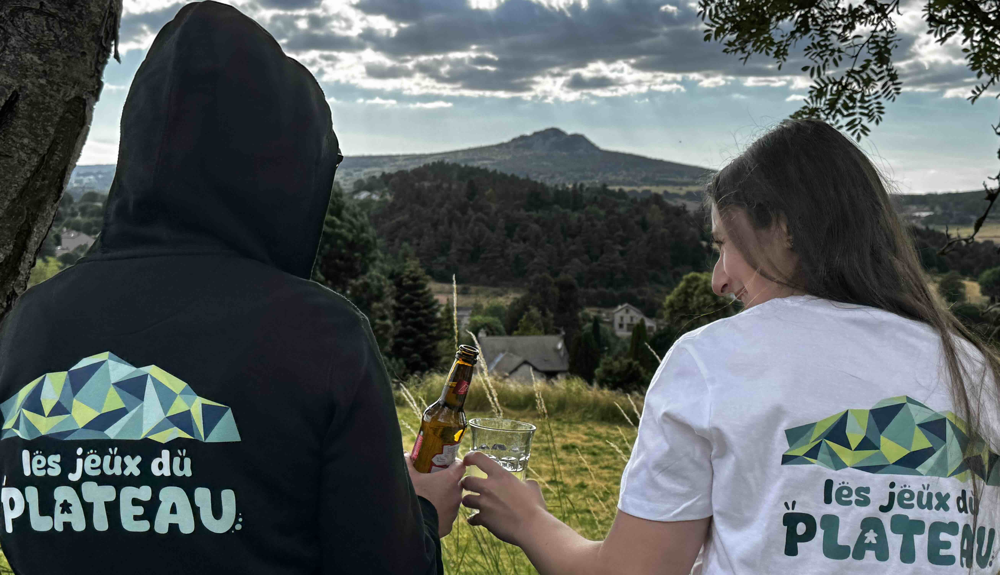
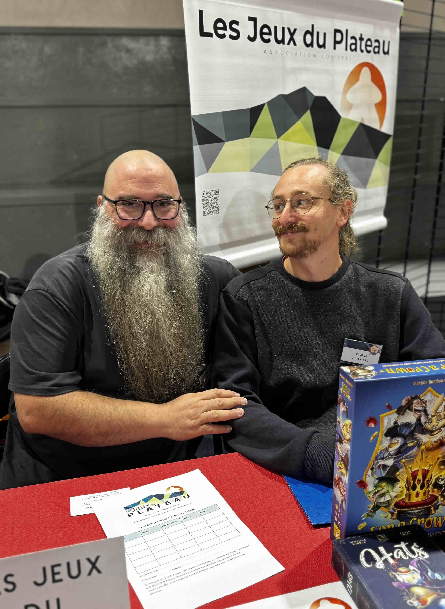

2022
Quelques passionnés. Quelques boîtes. Une première soirée.
Une idée simple prend vie : créer des rencontres régulières, ouvertes et conviviales autour des jeux de société modernes.

L'association • Depuis 2022
Les Jeux du Plateau sont nés d'une conviction simple : autour d'une table, quelques cartes, des dés ou un plateau suffisent souvent à créer des échanges, des rires et de belles rencontres.
Les meilleurs souvenirs ne tiennent parfois qu'à une table, quelques jeux… et de belles personnes autour.

Nous aimons découvrir de nouveaux univers, relever des défis, coopérer, rire et parfois passer une journée entière autour d'un même plateau.
Mais si les jeux sont le point de départ, ce sont les personnes qui donnent envie de revenir. Depuis 2022, nous accueillons toutes celles et ceux qui souhaitent partager un bon moment, quel que soit leur âge ou leur expérience.

2022
Une idée simple prend vie : créer des rencontres régulières, ouvertes et conviviales autour des jeux de société modernes.
Puis…
Le bouche-à-oreille fonctionne, les tables se remplissent et de nouvelles habitudes se créent, sans jamais perdre l'esprit des débuts.
Aujourd'hui
Des dizaines de rencontres chaque année, et toujours le même plaisir à accueillir une nouvelle personne autour d'une table.

Chaque année, le premier samedi de septembre, nous participons au Forum des associations du Plateau du Haut-Lignon, qui se déroule au Chambon-sur-Lignon.
Ce rendez-vous est devenu un moment important dans la vie de l'association. C'est souvent là que nous rencontrons de nouveaux habitants du Plateau, des familles curieuses de découvrir les jeux de société modernes ou des joueurs à la recherche d'un groupe avec qui partager leur passion.
L'accueil que nous y recevons chaque année contribue largement à faire connaître Les Jeux du Plateau et à accueillir de nouveaux adhérents.
C'est souvent autour de ce stand que commencent… de belles histoires.
Parce qu'un bon jeu devient un grand souvenir lorsqu'il est vécu ensemble.
Expliquer les règles, présenter les joueurs et faire naturellement une place à chacun.
Un nouveau jeu, une nouvelle stratégie ou simplement une nouvelle personne.
Les boîtes changent. Les soirées passent. Les liens restent.
Derrière chaque soirée, il y a des parties mémorables, des découvertes… mais surtout des rencontres. Voici ce que quelques adhérents ont souhaité partager.
« Je venais d'emménager dans la région et je ne connaissais personne. En rencontrant Les Jeux du Plateau, j'ai découvert des joueurs de tous horizons, mais surtout des personnes avec qui partager de vrais moments de convivialité. L'association a grandi, mais elle a conservé son esprit familial. »
« J'aime tous les types de jeux, mais ce que j'attends le plus, ce sont les moments passés avec cette chouette bande de copains. Chaque grande partie est un prétexte pour partager une aventure… et retrouver des personnes que j'apprécie. »
« En rejoignant Les Jeux du Plateau, j'ai découvert une bande de passionnés accueillants et attentifs aux nouveaux. On se sent rapidement à l'aise et chaque soirée se déroule dans une ambiance chaleureuse et conviviale. »
« Ce que j'aime ici, c'est qu'on nous explique les règles. Pas besoin de passer du temps à lire le livret : on s'installe, on joue, et tout se fait naturellement dans une très bonne ambiance. »
Collectivités, communes, structures locales et partenaires contribuent, chacun à leur manière, à faire vivre Les Jeux du Plateau.

Nous serions heureux de vous accueillir autour d'une table. Que vous veniez seul, entre amis ou en famille, il y aura toujours une place pour vous.